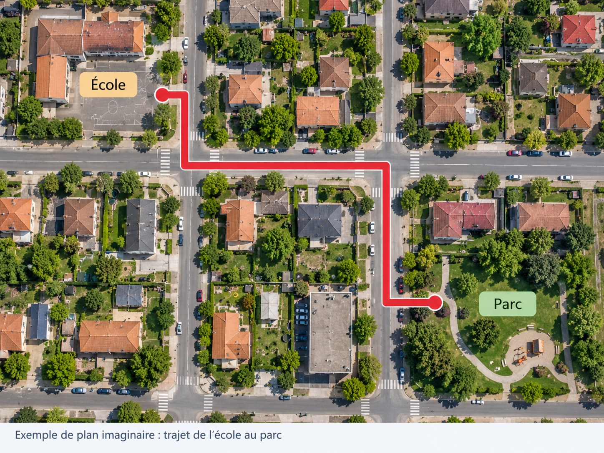

🦉 Maître Hibou · Géographie CE2 · Période 2 · GEOG-P2-04
🗺️ Utiliser un plan pour localiser un lieu et suivre un trajet
Un plan représente les lieux vus de dessus. Il aide à se repérer.

1. Lire les informations
Je lis le titre du plan et sa légende. Les symboles indiquent par exemple l’école, le parc ou la gare.
2. Trouver un lieu
Je repère le point de départ, les noms des rues et le lieu d’arrivée.
3. Décrire un trajet
Je suis les rues sur le plan et j’explique mon déplacement : tout droit, tourner à droite ou à gauche, traverser au passage protégé.
Je retiens
Avec un plan, je peux localiser un lieu et expliquer un trajet en suivant les rues.